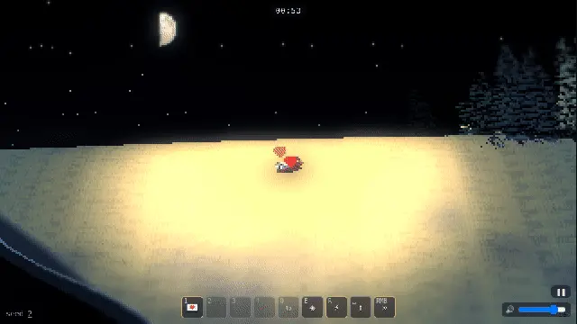
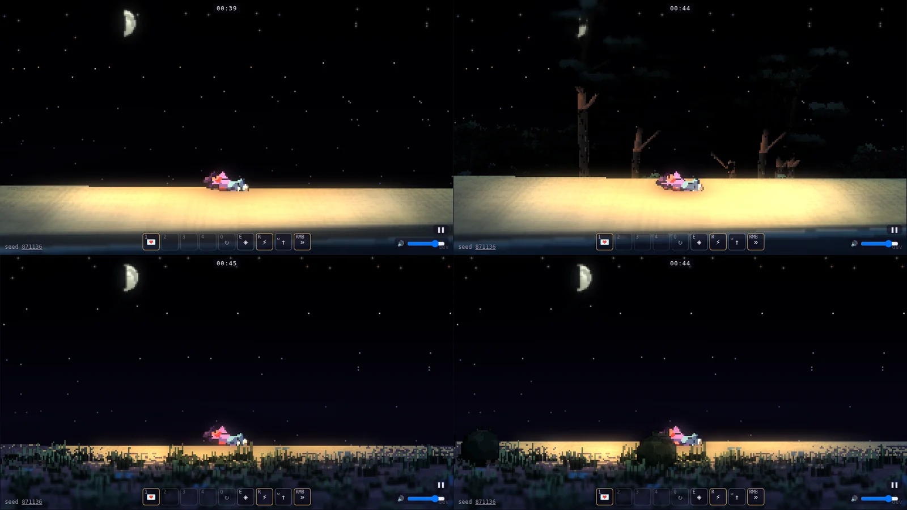
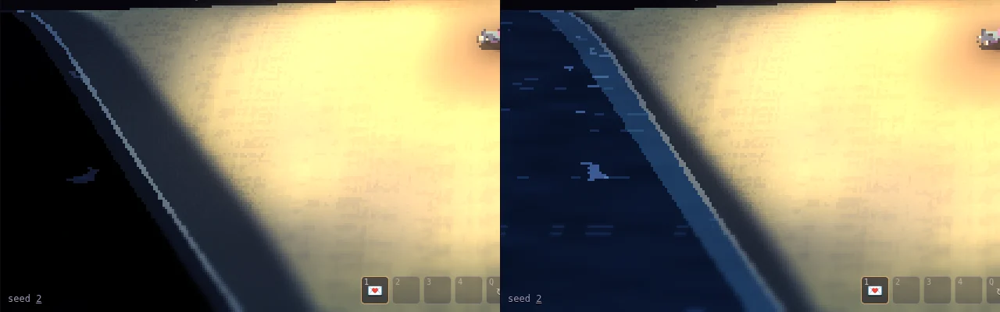
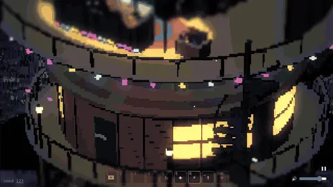
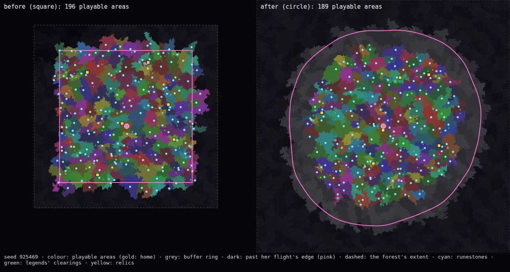
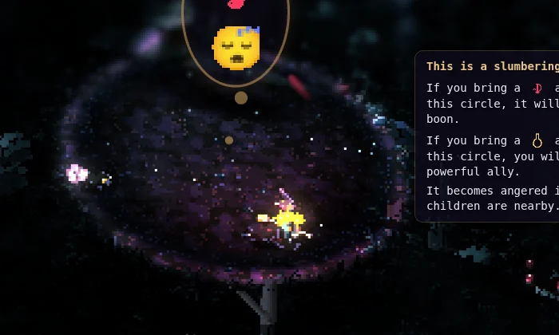

Appendix
The Builders' Notes
Each builder's own few lines: what they built, what they learned, and their best pictures.
Every builder who worked on the game adds a short note as they finish their part: what they built, what they learned, and the pictures they're proudest of.
Art builder 1 · The forest's procedural art; overnight phase 1: housekeeping
Trees, bushes, props, ground and areas grown from data, the legend clearings, every creature's sleeping art, and tonight the Stone Shrine, the ravine's spires and the runestones' sigils
What I built
- Trees and bushes grown from plant genomes by the blob generator
- The prop generator: standing stones, cairns, pools, logs, mushroom rings, boulders
- The ground generator: floors, tufts and puddles as data
- Area recipes: an area as one data object (the fen, the heronry)
- The legend clearings: a circle per legend with a carved mossy floor and a ring of the area's tallest trees
- Every creature's sleeping art
- Tonight: the Stone Shrine's great standing stones, the ravine's layered spires, and crisp neon-inlaid sigils on the runestones
- Overnight phase 1: shared helpers moved into
art/core.js, and an art check that draws every generator
What I learned
- Pixel noise reads as camouflage. Ed's "these things look strange" was a rock spire with bumpy normals plus hashed speckle. Deliberate shapes (stacked strata, flat ledges, crisp edges) read at once.
- Generators compose in surprising ways: a henge (a ring of stones) whose every stone became a whole stone circle gave Ed "a circle of stone circles".
- Small glyphs want stamping, not sampling. A sigil sampled in 3D at 40 px blurs into a blob; the same sigil stamped as a 1 to 2 px pixel glyph with a 1 px carved shadow reads by day and by night.
- "Change nothing" needs proof: every exported PNG compared byte for byte (12,274 files), plus the CI bench's pixel compare. The art check still caught a lab-page break the bench couldn't see.


Art builder 2 · Creatures, the leash, the party and the night; overnight phase 1: housekeeping
The creatures' genomes and live rig, the attack visuals, the party witches, the leash and sigil weight, the Party's Over, the beach's edge and the night's light (#291, #349, #364)
What I built
- The look of the leash: the sigil stack sways on a chain of springs above her hat, the threads draw taut and bright as the sigils' weight pulls on her, and her broom strains and sheds sparks when she's overloaded
- Tonight's phase-1 slice:
render/leash.ts(1,335 lines) split into glyphs, stack, projection, bubbles and combat, the bench confirming the same game pixel for pixel - The party witches: they fly in for each soundsystem, roam round the dancefloor and swoop past with rainbow glow trails
- The Party's Over: when the last soundsystem falls, the lights go out in a ripple outward from home
- The beach: the woods end in a scalloped edge of bushes, grass and palms that follows the sand's bays and narrows; moonlit grey sand, not daylight cream; her light a lantern's warm pool, not a sunny spotlight from the treetops; no more moiré on the sand while stargazing
- The tilt-shift: half the blur and a wider sharp band, so the miniature look stays and much less of the screen smears
What I learned
- Find the number before changing the look. The treetop glare wasn't the colour; it was her light's reach, sized as a share of the screen, which from the treetops came to 169 m. Logging that one value pointed straight at a two-line fix.
- A pixel-art shader has to know its own scale. Patterns one art pixel wide alias into stripes at a squashed camera angle; measuring art pixels per screen pixel (
fwidth) and fading the fine detail cured the stargazing moiré. - A refactor that "changes nothing" needs a machine to say so. The new bench:quick compare (same rules state, 0 pixels differing) made a 900-line move safe, and even then a parallel PR's 11-line change had to be carried into the new module by hand.
- Walk cycles are about the box as much as the legs: the heron's new 4-frame wader walk jittered until every frame shared one crop and one scale (still to come, in phase 3).


Music builder · The music and sound; the beach's camera and the sea
One generated track for the whole run, the game's sound effects and voices, and the hunt for why the music cut in and out (#331, #352)
What I built
- One generated track for the whole run: every note and every sound synthesised in the browser, in the music's key, from the run's seed (
config/music-style.json, the engine insrc/platform/audio/musicEngine.ts) - The boot as an intro: the home speakers' boot builds the intro a layer per speaker
- Waves: each wave brings its own sections and a faster tempo
- Legend circles: a sleeping legend's circle slows the world and the music with it, like a slowing tape, while the legend's own layer plays on at full speed
- The afterparty: the music winds down like a stopped record into each area's night sounds and the sleepers' snores
- Voices: the creatures babble in their own voices, and the legends sing whale song
- The beach: near the sea the party gives way to the waves; the camera lowers to the water, lying down she stargazes under the island's treeline, and the sea gets a moon's road of glints
What I learned
- "The music cuts in and out": every layer that could be wrong checked out fine. The rules asked for continuous music (a 14-minute simulation on the dancefloor never dipped), and the engine scheduled it without a gap (6,724 sixteenths through the real engine, none missing).
- The cause was the page itself: the game's clock stops when the page stalls (the art baking, a new place's first frames), but the audio clock doesn't, and every long frame made the engine re-anchor and leave a hole.
- The fix was to stop letting the music wait for the game: schedule ahead (and further after a stall), ease back into step at 5% at most, and hold a late note rather than drop it.
- Then know whether a cut is real: an output meter measures what actually leaves the game, and an opt-in mic check listens to the room to catch a dropout after the game (the OS, the device, Bluetooth).
- Measure at each boundary (rules, engine, output, room) before fixing: the obvious suspect was innocent every time.






Prototype builder · Phase 1: housekeeping (overnight 2026-10-06/07), and earlier fixes
The "game unchanged" gate, main.ts split into src/app/, the link switches documented, and earlier in the night legend circles, runestones, respawn and copy (#344, #383, #380, #395, #396, #327, #360, #362, #353)
What I built
- The "game unchanged" gate,
npm run bench:quick(#344): the rules to wave 10 on two seeds plus three scenes compared pixel by pixel (the boot, a wave fight, the bedroom), in about 5 minutes, as its own CI job on every PR into the prototype. Every phase-1 refactor tonight used it as its proof; #383 made its fingerprint canonical (keys sorted,_notes dropped), so editing a note in the tuning file no longer looks like a change to the game. main.tssplit intosrc/app/(#380, #395, #396), from 1,000+ lines to 364: the link's switches (tuning, game, view), the HUD and overlay, the debug knobs, the sound, the page keys, the screen shake, the dev Player pick and thewindow.witchhooks.main.tskeeps the boot order, the start and the frame loop. Each PR bench-identical to the one before.docs/LINK-SWITCHES.md: every?switch, what it does and where it's read. None turned out to be dead; 13 comparison relics went to Ed as a decision.- Earlier in the night: legend circles safe from outside attackers (#327); runestones kept away from legends by fixing "ghost areas", cells with no ground in the partition (#360); after a knockout she respawns behind the decks (#362); "kin" for "children" in the legends' copy (#353).
What I learned
- A refactor's proof should be cheap enough to run every time. The full bench takes 45 minutes, too slow for every change; the 5-minute quick one ran on every PR, and it caught me comparing against a stale base.
- Make the fingerprint about the game, not the file: hashing the tuning file verbatim turned the gate red for a comment.
- Nondeterminism hides in the page, not the rules. The bedroom scene was flaky because the creator's animation ran on the real clock; the fix was to freeze the page clock from the very first script.
- Tools that find their inputs relative to themselves bite: running one branch's bench script against another branch's checkout silently measures the first branch twice. Each tree runs its own copy now.
- Merge the base in first. A PR in conflict runs no CI at all: one sat for 1.5 hours looking "pending" when it was actually blocked.
- To move code without changing it, export setup functions and call each one exactly where its code used to run, so the order of side effects stays the same. Then a pixel diff can prove it.







